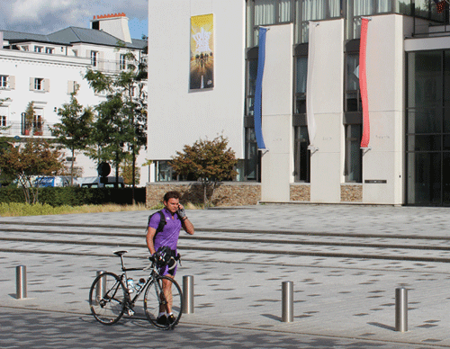

| Serris a accueilli "la grande boucle" et clovis cornillac |
|
Le mardi 2 octobre, l'Hôtel de Ville de Serris et les rues environnantes arboraient les couleurs du Tour de France à l'occasion du tournage de plusieurs scènes du long-métrage : "la Grande Boucle", de Laurent Tuel. Clovis Cornillac, acteur principal de ce film, y incarne un passionné du Tour de France qui décide de participer à cette épreuve, un jour avant les professionnels.
Après le lycée Émilie du Châtelet et le gymnase Olympe de Gouges, qui avaient été utilisés pour le tournage du film "Dans la Maison", les Serrissiens pourront découvrir leur Hôtel de Ville sous un autre jour, lors de la sortie de "La Grande Boucle" en juin 2013.
La Municipalité tient à remercier tous les Serrissiens, et en particulier les riverains, pour leur compréhension quant aux éventuels désagréments qu'a pu entraîner ce tournage. |
|  |
|
INSCRIPTION FERME AUX ACTIVITÉS PÉRISCOLAIRES
DU 8 AU 26 OCTOBRE 2012 |
|
Madame, Monsieur,
Suite à des dysfonctionnements de logiciel, les bornes Maelis ne sont pas en mesure actuellement de prendre en compte vos inscriptions journalières. Dans un souci de sécurité, et pour faciliter l'identification de vos besoins par les équipes d'animation, nous vous demandons de bien vouloir remplir le formulaire qui se trouve dans le carnet de liaison de votre enfant. Cet imprimé annule et remplace vos demandes effectuées sur la fiche d'inscription 2012-2013, pour la période du lundi 8 octobre au vendredi 26 octobre 2012 inclus
Nous vous demandons de bien vouloir compléter et nous retourner l'imprimé situé dans le carnet de liaison de votre enfant, avant le lundi 8 octobre au matin.
Sans retour de votre part, nous serons dans l'obligation de considérer votre enfant comme non inscrit à l'activité.
Veuillez nous excuser pour ce dysfonctionnement et agréer, Madame, Monsieur, l'expression de nos sincères salutations. |
|
| INSCRIPTION AU CENTRE DE LOISIRS - VACANCES DE TOUSSAINT |
|
| Du lundi 1er octobre au vendredi 12 octobre 2012 |
|
Pour l'inscription de vos enfants au centre de loisirs, un dossier est à retirer, à partir du 1er octobre, au service Maëlis de l'Hôtel de Ville ou en téléchargement. Ce dosiser doit être retourné dûment rempli, auprès du service Maëlis, du lundi 1er au vendredi 12 octobre 2012 -
En fonction des places disponibles
> + d'informations sur les modalités d'inscription, d'annulation, de facturation, etc.
Rappel : Le Service Maëlis sera fermé tous les vendredis matins, du 21 septembre au 26 octobre 2012 inclus. |
|
| MODIFICATION DU PLAN D'OCCUPATION DES SOLS :
ENQUÊTE PUBLIQUE |
|
| Du 8 octobre au 9 novembre inclus. |
|
Par arrêté n° 16/2012, le Président du SAN du Val d'Europe a prescrit une enquête publique relative à la modification du Plan d'Occupation des Sols de la commune de Serris qui se déroulera du 8 octobre au 9 novembre 2012 inclus.
Les pièces du dossier sont tenues à la disposition du public à la mairie de Serris aux jours et heures habituels d'ouverture, ainsi qu'au siège du SAN du Val d'Europe.
Monsieur Jean Pierre MAILLARD, commissaire-enquêteur désigné par le Tribunal Administratif de Melun recevra les observations du public en Mairie de Serris,
- le lundi 8 octobre 2012 de 14h00 à 18h00,
- le samedi 27 octobre 2012 de 9h00 à 12h00
- le vendredi 9 novembre 2012 de 14h00 à 18h00.
> Plus d'informations |
|
| STAGE MULTI-ACTIVITÉS SPORT/CULTURE |
|
| Du 5 au 9 novembre 2012. Inscription jusqu'au 19 octobre. |
|
À l'attention des 8-11 ans
24 places disponibles
Théâtre : "matchs d'improvisation" animés par Blandine Chaix de l'A.C. Théâtre Val d'Europe
Sport collectifs : Kin-ball, rugby, handball, tchouk-ball
Nouveau : vous avez la possibilité de venir rechercher vos enfants, au centre de loisirs 123 Soleil, de 17h45 à 19h00.
Inscriptions jusqu'au vendredi 19 octobre auprès du Service Maëlis à l'Hôtel de Ville.
> + d'informations |
|
|
|
| PRÉVENTION ET DÉPISTAGE ANONYME ET GRATUIT |
|
| Jeudi 11 et lundi 22 octobre 2012, de 12h00 à 18h00, place d'Ariane |
|
Opérations de prévention et dépistages anonyme et gratuit
(VIH-Sida, Hépatite B, Hépatite C, Syphilis),
- le jeudi 11 octobre, de 12h00 à 18h00, place d'Ariane.
- le lundi 22 octobre, de 12h00 à 18h00, place d'Ariane.
Pour plus d'informations :
CDAG au 01 64 30 75 38
Maison des Jeunes au 01 60 43 21 55
(de 17h à 19h) |
|
|
|
| TEST DE DÉPISTAGE VIH À RÉSULTAT IMMÉDIAT |
|
| Jeudi 11 octobre, de 19h00 à 23h00, place d'Ariane |
|
L'association AIDES, en partenarait avec la Ville de Serris et le SAJED 77 vous proposent une opération de test de dépistage VIH à résultat immédiat, le jeudi 11 octobre 2012, de 19h00 à 23h00, place d'Ariane.
Pour plus d'infos :
Tél. : 01 60 06 05 05
mail : fcollin@aides.org |
|
|
|
CONFÉRENCE CULTURELLE :
Le cirque dans les arts plastiques (fin XVIIIe-fin XXe) |
|
|
Entrée libre
Depuis son développement à la fin du XVIIIe siècle, le cirque moderne a inspiré de nombreux artistes : Edgar Degas, Henri de Toulouse-Lautrec Georges Seurat, Kees Van Dong, Pablo Picasso, etc.
Miro, etc.
> En savoir + |
|
|
|
| BOURSE AUX VÊTEMENTS AUTOMNE HIVER |
|
| Samedi 6 octobre 2012, de 9h00 à 17h00, salle Jules Verne |
|
Vêtements de saison pour toute la famille, en bon état, propres et à la mode
Renseignements : 06.62.70.58.44
Demander les listes par mail : lebaseli@numericable.fr
> Plus d'informations |
|
| PETIT-BLEU ET PETIT-JAUNE |
|
|
Jeune public -
Durée : 0h25
À partir de 2 ans. 2 euros
Petit-BLEU et Petit-JAUNE évoluent chacun de leur côté dans le cocon familial. Ce n'est que lorsqu'ils décident d'affronter le monde extérieur ensemble qu'ils découvrent à la fois ses richesses et ses obstacles. De retour chez eux ils sont tout vert et affrontent le regard de leurs parents qui ne les reconnaissent pas.
Le spectacle s'inspire de l'album éponyme de Léo Lionni - édition École des loisirs.
www.succursale101.eu
> Plus d'informations |
|
|
|
| HANDBALL - CHAMPIONNAT DE FRANCE DIVISION 2 FÉMININE |
|
| Samedi 13 octobre, 20H00, gymnase Olympe de Gouges. Entré libre |
|
|
Entrée gratuite - Venez nombreux
> Site : www.hbcve.fr |
|
|
| Lundi 15 octobre, 20h30, salle du Conseil municipal de l'Hôtel de Ville |
|
Les séances du Conseil Municipal sont publiques. |
|
| ZONE LIBRE : "DR JEKYLL & MR HYDE" |
|
|
Ciné concert - Durée 1h00
À partir de 10 ans - Tarif : A
Zone libre, c'est le nom du trio né de la rencontre entre Serge Teyssot-Gay (qui fut notamment le guitariste de Noir Désir) et Marc Sens, avec la complicité de Cyril Bilbeaud à la batterie.
Collant à l'image sans jamais renoncer à la logique de l'improvisation pure, ils suivent les péripéties de la figure romanesque imaginée par Stevenson : le docteur Jekyll qui, à l'écran aussi, devient le monstrueux Hyde.
www.notetour.com
> En savoir + |
|
|
|
|